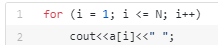

Vectorii sau tablourile unidimensionale sunt structuri de date bine definite si organizate in memorie. Cu ajutorul acestora, se pot păstra in memorie si accesa ulterior mai multe variabile, fără a fi nevoie de reținerea explicita a fiecăreia dintre ele. Vectorii se folosesc, cel mai adesea, când numărul de variabile necesare într-o problema variază sau este de dimensiune mare. |
Declararea vector: | La d e c l a r a r e a unui tablou trebuiesc precizate:
|
Exemple: int v[100], float v[40] , char[32], |
Citirea unui vector |
Accesul elementelor dintr-un vectorAccesul fiecărui element al tabloului se face prin numele acestuia urmat între paranteze drepte [ ] de indicele sau (adică poziția pe care acesta o ocupă în tablou) În limbajul C++ , indicii tablourilor încep numaratoarea de la 0 si se termină la N – 1 (unde N este numarul total de elemente). |
Afișarea unui vector |
Adaugarea unui element nouPentru a adauga un element într-un tablou unidimensional, tot ceea ce trebuie să facem este să mărim dimensiunea logică ,, n" a vectorului, și să memorăm noul element în căsuța ce am eliberat-o. |
|
Inserarea unui element nouPresupunând că avem un șir „V” cu „n” elemente, și dorim să inseram elementul „numar_nou” pe poziția „p”. În imaginea de mai sus, am inserat elementul „13” pe poziția 3. Cum am procedat? | Ștergerea unui elementPresupunând că avem un șir „V” cu „n” elemente, și dorim să ștergem elementul de pe poziția „p”. În imaginea de mai sus am șters elementul de pe poziția 2. Cum am procedat? |
Există anumite metode de sortare a vectorilor,dintre care,cele mai cunoscute: